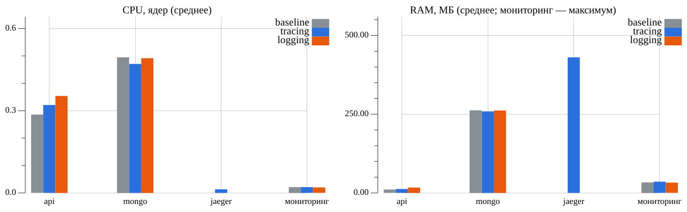

Трассировка и логирование: сравнение ресурсов
Варианты конфигурации
| Вариант | Описание | Настройки API | Профили стенда | Прогоны |
|---|---|---|---|---|
| baseline | Без трассировки, логирование по умолчанию | VITALINE_LOG_EXTENDED=false VITALINE_TRACING_ENABLED=false | — | baseline/ |
| tracing | Трассировка OpenTelemetry → Jaeger | VITALINE_LOG_EXTENDED=false VITALINE_TRACING_ENABLED=true | tracing | tracing/ |
| logging | Расширенное логирование: debug, тела запросов, команды MongoDB | VITALINE_LOG_EXTENDED=true VITALINE_TRACING_ENABLED=false | — | logging/ |
Ступенчатое увеличение нагрузки
| Вариант | RPS | p50 мс | p95 мс | p99 мс | Отказы | CPU api ср. | CPU api max | RAM api ср., МБ | RAM api max | Запись api, КБ/с | CPU mongo | CPU jaeger | RAM jaeger max | CPU мониторинга | RAM мониторинга max | Итог |
|---|---|---|---|---|---|---|---|---|---|---|---|---|---|---|---|---|
| baseline | 709 | 1.61 | 106 | 264 | 0.00% | 0.37 | 0.75 | 18.3 | 79.9 | 86.9 | 0.57 | — | — | 0.02 | 39.0 | SLO выполнено на всех ступенях, до 1500 VU / 1516 RPS |
| tracing | 656 | 4.60 | 458 | 946 | 0.10% | 0.46 +25% | 0.94 | 30.1 +64% | 113 | 120 +38% | 0.60 | 0.02 | 709 | 0.02 | 48.4 | предел 1200 VU / 1174 RPS, нарушение SLO с 1500 VU |
| logging | 643 | 17.2 | 492 | 1054 | 0.30% | 0.51 +39% | 0.96 | 29.4 +61% | 101 | 1431 +1548% | 0.64 | — | — | 0.02 | 33.6 | предел 1200 VU / 1149 RPS, нарушение SLO с 1500 VU |

Перегрузка и восстановление
| Вариант | RPS | p50 мс | p95 мс | p99 мс | Отказы | CPU api ср. | CPU api max | RAM api ср., МБ | RAM api max | Запись api, КБ/с | CPU mongo | CPU jaeger | RAM jaeger max | CPU мониторинга | RAM мониторинга max | Итог |
|---|---|---|---|---|---|---|---|---|---|---|---|---|---|---|---|---|
| baseline | 410 | 14.9 | 435 | 1007 | 0.20% | 0.35 | 0.82 | 24.9 | 68.0 | 56.0 | 0.59 | — | — | 0.03 | 33.2 | восстановление за 20 с |
| tracing | 439 | 6.68 | 170 | 360 | 0.00% | 0.41 +19% | 0.93 | 19.7 -21% | 43.1 | 76.6 +37% | 0.59 | 0.03 | 674 | 0.03 | 33.1 | восстановление за 20 с |
| logging | 424 | 6.04 | 358 | 738 | 0.10% | 0.42 +20% | 0.96 | 30.7 +23% | 71.6 | 995 +1676% | 0.57 | — | — | 0.02 | 35.2 | восстановление за 25 с |

Фиксированная нагрузка
| Вариант | RPS | p50 мс | p95 мс | p99 мс | Отказы | CPU api ср. | CPU api max | RAM api ср., МБ | RAM api max | Запись api, КБ/с | CPU mongo | CPU jaeger | RAM jaeger max | CPU мониторинга | RAM мониторинга max | Итог |
|---|---|---|---|---|---|---|---|---|---|---|---|---|---|---|---|---|
| baseline | 361 | 1.36 | 29.0 | 54.5 | 0.00% | 0.29 | 0.49 | 10.7 | 15.6 | 52.0 | 0.49 | — | — | 0.02 | 33.4 | 173215 запросов |
| tracing | 362 | 1.37 | 24.0 | 47.2 | 0.00% | 0.32 +12% | 0.62 | 12.3 +15% | 18.2 | 64.9 +25% | 0.47 | 0.01 | 653 | 0.02 | 35.5 | 173885 запросов |
| logging | 360 | 1.60 | 27.7 | 53.0 | 0.00% | 0.35 +24% | 0.59 | 16.9 +58% | 24.4 | 895 +1622% | 0.49 | — | — | 0.02 | 32.6 | 173619 запросов |

Стоимость трассировки и логирования внутри процесса
| Вариант | Время, мкс/оп | ±σ | Δ | Память, КБ/оп | Δ | Аллокаций/оп | Δ |
|---|---|---|---|---|---|---|---|
| baseline | 118 | 28.4 | 33.4 | 201 | |||
| tracing | 205 | 8.11 | +74% | 60.7 | +82% | 390 | +94% |
| logging | 146 | 2.29 | +24% | 41.2 | +23% | 290 | +44% |
| tracing+logging | 257 | 6.97 | +118% | 68.6 | +106% | 480 | +139% |
Трейсы
stress · traces/jaeger.json
| Операция | Спанов | Среднее, мс | p95, мс |
|---|---|---|---|
| visits.find | 539 | 1.65 | 5.11 |
| appointments.find | 449 | 2.69 | 13.1 |
| appointments.update | 154 | 1.07 | 3.75 |
| GET /api/visits | 153 | 6.79 | 24.3 |
| GET /api/appointments | 142 | 2.99 | 11.8 |
| GET /api/patients/{id} | 142 | 4.29 | 28.0 |
| patients.find | 142 | 3.95 | 27.8 |
| schedule_slots.find | 141 | 4.50 | 26.7 |
| GET /api/schedule/free | 141 | 4.84 | 26.9 |
| appointments.insert | 140 | 2.65 | 9.46 |
| appointments.aggregate | 140 | 3.74 | 25.0 |
| POST /api/appointments | 140 | 6.84 | 45.1 |
| visits.insert | 106 | 1.40 | 5.46 |
| POST /api/visits | 106 | 6.19 | 33.1 |
| visits.update | 104 | 2.24 | 7.45 |
| POST /api/visits/{id}/complete | 104 | 5.96 | 35.9 |
| POST /api/appointments/{id}/cancel | 48 | 3.84 | 14.3 |
| patients.insert | 20 | 1.84 | 19.7 |
| POST /api/patients | 20 | 2.24 | 19.9 |
| ping | 4 | 0.35 | 0.43 |
| GET /health | 4 | 0.67 | 0.85 |
stable · traces/jaeger.json
| Операция | Спанов | Среднее, мс | p95, мс |
|---|---|---|---|
| visits.find | 508 | 0.87 | 3.86 |
| appointments.find | 430 | 2.25 | 17.2 |
| POST /api/appointments | 149 | 3.57 | 25.5 |
| appointments.update | 149 | 1.29 | 3.83 |
| appointments.insert | 149 | 1.27 | 4.29 |
| appointments.aggregate | 149 | 2.03 | 8.01 |
| GET /api/patients/{id} | 146 | 2.89 | 22.9 |
| patients.find | 146 | 2.71 | 22.7 |
| GET /api/schedule/free | 142 | 2.27 | 7.27 |
| schedule_slots.find | 142 | 2.05 | 5.67 |
| GET /api/appointments | 142 | 2.12 | 3.65 |
| GET /api/visits | 139 | 4.75 | 29.8 |
| POST /api/visits/{id}/complete | 113 | 2.74 | 13.7 |
| visits.update | 113 | 0.91 | 3.85 |
| POST /api/visits | 111 | 5.32 | 25.9 |
| visits.insert | 111 | 0.92 | 4.58 |
| POST /api/appointments/{id}/cancel | 38 | 2.70 | 26.4 |
| POST /api/patients | 16 | 0.89 | 4.57 |
| patients.insert | 16 | 0.69 | 4.39 |
| ping | 4 | 0.48 | 0.66 |
| GET /health | 4 | 0.81 | 1.20 |